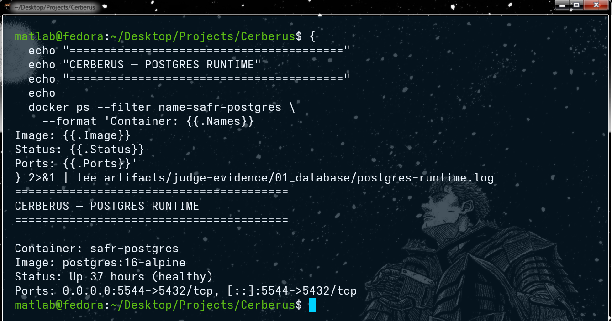
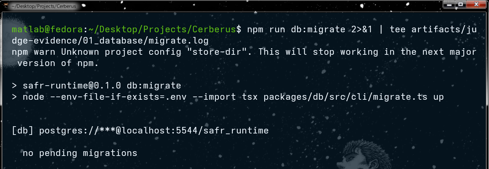
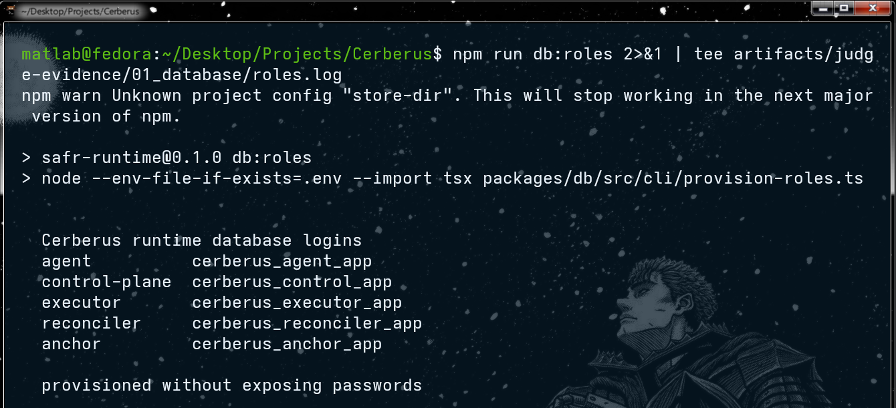
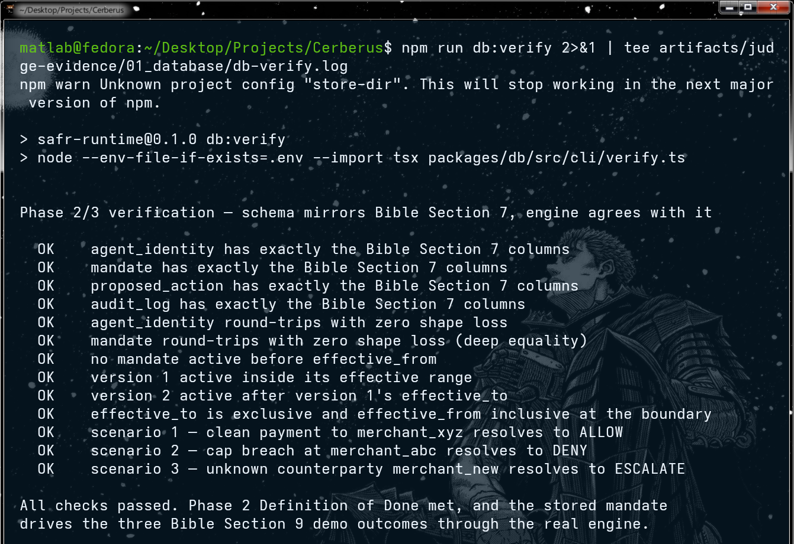
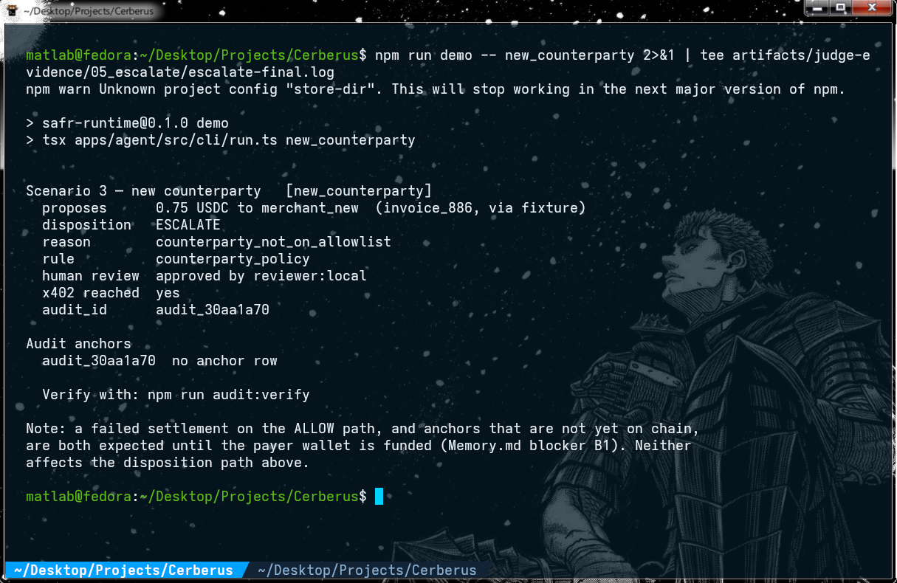
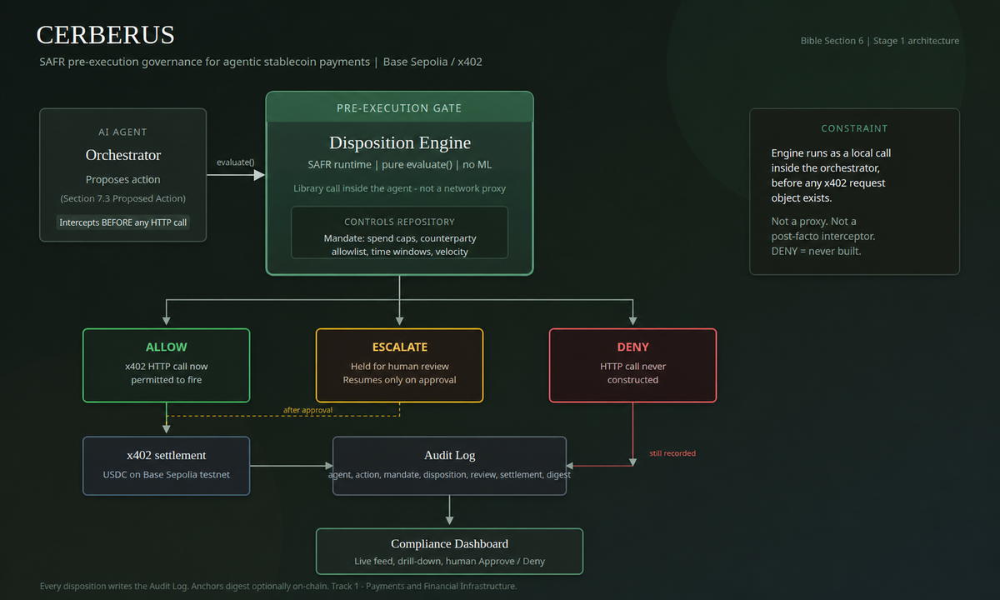

Cerberus — SAFR pre-execution governance runtime for AI-agent payments
An AI agent can propose a payment; Cerberus decides ALLOW / DENY / ESCALATE before the x402 request exists, and the payment key lives in a separate process.
1. What this page is / is not
- It is a static, read-only evidence page. It was built from the repository's committed evidence package (
artifacts/judge-evidence/) and the submission documents (docs/submission/EVIDENCE.md,docs/submission/FINAL_FREEZE.md). The recordings, screenshots, the SHA-256 manifest and the evidence summary served here are byte-for-byte copies of the files in the repository. - It is not the runtime. Cerberus runs on the operator's machine by design: its trusted services (control plane and isolated executor) bind
127.0.0.1and are loopback-scoped, and no public-internet deployment is claimed. - Nothing here is live or interactive. No button on this page proposes, approves, settles or anchors anything. The only outbound links are to GitHub and to the public Base Sepolia block explorer.
- No keys or secrets are involved. This site contains no wallet, signer, token, credential or environment file. The evidence package lists credential variable names and lengths only, never values.
2. The hardened-path run — 22 August 2026, Base Sepolia
Captured on the finalist build with the payment signer, the execution-authorization signer and the audit-anchor signer held by three separate processes with three separate least-privilege database logins. The agent process holds none of them. The seeded mandate allows at most 1 USDC per transaction and 3 USDC per rolling 24 hours.
reviewer:local, then SETTLED on chain.The four scenarios
| Scenario | Amount | Audit id | Governance result | Financial outcome | Settlement tx | Anchor tx |
|---|---|---|---|---|---|---|
| DENY scenario cap_breach, counterparty merchant_abc |
5 USDC against a 1 USDC per-transaction cap | audit_84670a33 |
DENY · per_transaction_cap_exceeded · rule spend_caps.per_transaction_max · x402 never constructed |
None. There is no failed blockchain transaction either, because payment authority never existed. | — (none) | 0xfaabd09ea1829938d7d447b9aa1152743cd2eae62738873b22366eb631e9a7aa block 45793550 |
| ESCALATE scenario new_counterparty, counterparty merchant_new |
0.75 USDC | audit_30aa1a70 |
ESCALATE · counterparty_not_on_allowlist · rule counterparty_policy · held for a human, approved by reviewer:local · authorization auth_f70a3e32-35f9-4427-b5e6-a8b1e72f5234 (CONSUMED) |
SETTLED — receipt status = 0x1, block 45795096, USDC Transfer of 750000 atomic (0.75 USDC) executor → merchant; settled 2026-08-22T00:28:02Z |
0x55ba3c22d58a83a1b6093f2e289c544239d4839cd97b008b791d5a6052225469 | 0x3d4659c3890b2061eaf04fc4351b83bce5d496c999259e6a8a55a6290be78877 block 45795114 |
| ALLOW scenario clean, counterparty merchant_xyz, invoice_884 |
0.5 USDC | audit_ff45a977 |
ALLOW · within_mandate · authorization auth_8b204222-ac27-40b9-a5dc-d5a3dc8cb875 (CONSUMED) |
SETTLED — receipt status = 0x1, block 45796303, USDC Transfer of 500000 atomic (0.5 USDC) executor → merchant; settled 2026-08-22T01:08:17Z |
0xfe4d02288ea8882d8b75e520cf627e97d57b04e4f3a3cc81e40b780a36c995fa | 0xdb4eed29be7f44d0c7af7375721047219cf6c74c0f87a08b373938a6b9596368 block 45796318 |
| AMBIGUOUS OUTCOME a real incident during the run set, not staged |
0.5 USDC | audit_0aaac796 |
ALLOW · within_mandate · x402 reached · authorization auth_4920d58f-1337-4d44-ba7a-70b3f0fdff9a (CONSUMED) · execution became ambiguous after signing |
No transfer. Capacity stayed held; nothing was blindly retried; the keyless reconciler returned deferred 17 times; the EIP-3009 authorization expired unused. Terminal state FAILED, settlement_tx NULL, “EIP-3009 authorization expired unused; safe to retry”. |
— (none) | 0x156f3ed3e17d65a59ca37593befa8eb47b02dae8b44eafbe5b008318db8d62e3 block 45795806 |
Identities
| Item | Address (Base Sepolia) |
|---|---|
| Executor (payer) | 0x35820e5cC60F961515EF987C94D4328a82Df38Fc |
Merchant payTo | 0xf56e3F3134879156e11EAff78978a270726B661b |
| USDC | 0x036CbD53842c5426634e7929541eC2318f3dCF7e |
AuditAnchor contract | 0x2D2d857ce3c0d5d666B7e0dB3fE8067d4B4D6Ff7 |
npm run audit:verify → 5/5 anchored records proven on chain. Each record's digest was reproduced from the stored record and matched against its own anchor transaction — the four scenario records above plus one further record from the same run set, audit_03117a66 (anchor 0x98b34f10e47aac9e2e46b18ee4e049500866cd83af0743e43a8f6a3189ede2da, block 45793552). Transcript: artifacts/judge-evidence/08_final/final-verification.log.
Why the ambiguous outcome is the strongest evidence, not the weakest
A merchant's HTTP response is not financial truth. When the response to a signed execution never resolved, Cerberus did not treat “the merchant said it failed” as proof that money did not move — it kept the mandate capacity held and refused to retry. The keyless reconciler (it holds no private key) deferred 17 times rather than guess.
The proof of non-payment is read from the chain, not from the merchant. Calling USDC.authorizationState(payer, nonce) for the reservation's own EIP-3009 authorization returns false, and that authorization's validBefore has elapsed. The money did not move, and cannot move under that authorization. That is positive non-payment evidence.
- Reservation
res_bcaf9720-4b9a-4710-946c-cb9d00d04a36- Payer
0x35820e5cC60F961515EF987C94D4328a82Df38Fc- EIP-3009 nonce
0x8dbcbebfc0c876c91a6b64f0e716f5b52f09257901583d7692b38d06dc9739dcvalidBefore1787359784= 2026-08-22T00:49:44Z (elapsed)authorizationState0x00…00→ false; never consumed on chain- Terminal state
FAILED,settlement_txNULL, reconciliation attempts 17, “EIP-3009 authorization expired unused; safe to retry”
Reading the raw logs and the Phase 5 screenshot. The demo CLI prints a generic note that a failed settlement and unanchored records “are expected until the payer wallet is funded”. That wording is stale informational text carried by the runner and does not describe these runs: the payer was funded, both permitted scenarios settled, and all five records are anchored. The authoritative facts are the on-chain receipts and the payment_reservation rows, both re-read in 08_final/final-verification.log. Historical logs are kept byte-for-byte rather than edited after the fact. 05_escalate/escalate-raw.log is the first ESCALATE attempt, which timed out waiting for a human reviewer; it is retained on purpose — the human gate is a real cross-process hold, not an in-memory pause.
3. Recordings & screenshots
Screen recordings — phases 0 to 7
npm run db:verify. open fileaudit_84670a33. open filemerchant_new is held for a human, approved by reviewer:local, then settled; audit_30aa1a70. open fileaudit_ff45a977. open fileaudit_0aaac796. open fileScreenshots
{kind=link}

safr-postgres (postgres:16-alpine) healthy on port 5544.{kind=link}

npm run db:migrate: no pending migrations.{kind=link}

npm run db:roles: separate logins for agent, control-plane, executor, reconciler and anchor, provisioned without exposing passwords.{kind=link}

npm run db:verify: all 13 checks pass; the stored mandate drives the three demo outcomes through the real engine.{kind=link}

merchant_new → ESCALATE, counterparty_not_on_allowlist, approved by reviewer:local, x402 reached, audit_30aa1a70. The closing note about an unfunded payer wallet is stale runner text (see above); this run settled and its anchor landed — see the table in section 2.4. How it works

docs/assets/safr-architecture-slide.png, drawn at Stage 1). The pre-execution gate, the three dispositions and the audit log are unchanged; the finalist build adds the signer isolation, isolated executor, reconciler and anchor worker described below.- The agent proposes. The AI agent's orchestrator produces a structured proposed payment. The agent process holds no payment key, no authorization signer and no anchor signer (Phase 2 of the run checks this).
- A deterministic disposition engine evaluates it against a versioned mandate — spend caps, counterparty allowlist, time windows, velocity — as a pure, rule-based library call inside the orchestrator, before any x402 request object exists. No LLM is in the decision path.
- The result is ALLOW, DENY or ESCALATE. DENY means the x402 client is never constructed. ESCALATE holds the action until a human reviewer approves or denies it from a separate process; the agent cannot approve itself.
- An isolated executor acts only on a one-use, 60-second signed authorization. The executor is the only process that holds the payment key. It accepts a short-lived, single-use Execution Authorization bound to the exact proposal, mandate version, chain, token, atomic amount, payee and resource, and consumes it one-shot.
- Settlement is proven by reading the chain; audit records are hash-anchored by a separate trusted worker. A payment is marked SETTLED only on exact successful on-chain inclusion of the USDC transfer — never on the merchant's HTTP response — and a keyless reconciler handles ambiguous outcomes. Terminal audit records are canonically hashed and anchored to Base Sepolia by a separate anchor worker, which makes them tamper-evident.
5. Verified gates
| Gate | Result |
|---|---|
npm test | 384/384 tests, 78 suites, 0 failed, 0 skipped |
npm run adversarial | 12/12 attack classes, 80 assertions |
npm run redteam | 12/12 attack classes, 70 assertions |
npm run mutation | 12/12 security guards proven detectable |
npm run sandbox — seeds 42 and 1337 | 1,000 actions / 50 agents / concurrency 25 per seed — 0 budget, duplicate-effect or replay violations |
npm run db:verify | 13 checks, all pass |
npm run audit:verify | 5/5 anchored records proven on chain |
npm run evidence:verify | PASS on a clean clone (CI step “Verify portable release evidence”) |
npm run typecheck · dashboard build · contracts:compile · pnpm audit | clean · clean · clean · no known vulnerabilities |
| Continuous integration | GitHub Actions run 32301340842 on head 6d40e85bef71d2dfa51edff34a99c7a6b8eebad1 — all 21 steps green |
6. Integrity
The evidence package is covered by a SHA-256 manifest. Both integrity files are served here as exact copies of the repository files:
- SHA256SUMS.txt — the manifest for
artifacts/judge-evidence/(every file except itself and the volatile03_services/dashboard.log, which the dashboard service was still appending to at packaging time). - evidence-summary.json — the machine-readable summary of the run set (generated 2026-08-22T01:49:00Z;
status: PASS;critical_missing: []).
Verify the package has not changed since capture, from a clone of the repository:
cd artifacts/judge-evidence && sha256sum -c 08_final/SHA256SUMS.txtThe recordings and screenshots served by this site are the files named in that manifest; their listed digests are reproduced here so a file downloaded from this page can be checked against the repository.
| File on this site | Manifest path | SHA-256 (from SHA256SUMS.txt) |
|---|---|---|
| media/phase-00-01-environment-database.webm | 11_videos/phase-00-01-environment-database.webm | 16c518c4fde6af1aeca51dc0cbe7e2fc7866c1089dd37807c3680e0a1aa987d8 |
| media/phase-02-credential-boundaries.webm | 11_videos/phase-02-credential-boundaries.webm | 18854c5525c804f2de6ef2f0c97f4c9085ce50aca4a49accae6cb2c7a38cac12 |
| media/phase-03-runtime-health.webm | 11_videos/phase-03-runtime-health.webm | 0b3d1a381cb201b7f09288eeab7ced318e984c0d4cd3126bb4e5332807f286ce |
| media/phase-04-deny.webm | 11_videos/phase-04-deny.webm | 0b32f2b074c8cd7a6daa3d8b38c87bdbf6df50a82ec1938315f38d7ce2896318 |
| media/phase-05-escalate-human-approval.webm | 11_videos/phase-05-escalate-human-approval.webm | aebb49bf8e68f0845dd39c23c8b8a950c8fbc7487c6db0643f18136c1e044081 |
| media/phase-06-allow-settled.webm | 11_videos/phase-06-allow-settled.webm | fa4b6978a9310ac45016a622959c1a1cb735d76f11da9080e1c2c66d8adedd2c |
| media/phase-07-outcome-unknown-reconciliation.webm | 11_videos/phase-07-outcome-unknown-reconciliation.webm | 6400b8d40a804724891d6ef0cf32d74bbcefce67dc5c62f41dd7df9b984827aa |
| screenshots/phase-00-01-01-postgres-runtime.png | 10_screenshots/phase-00-01/01-postgres-runtime.png | 90363befdba21661da6fda18a681d3c615c4a763639e30761824c69c6f0b9cdf |
| screenshots/phase-00-01-02-migrations.png | 10_screenshots/phase-00-01/02-migrations.png | 4bce6a01e270b44166571d331554d77562d324aea6dd162cec94779b886879d9 |
| screenshots/phase-00-01-03-database-roles.png | 10_screenshots/phase-00-01/03-database-roles.png | c1c31e92191f1d55d0ad1d20ed3fa18be7f1d2c7376266af3cad389ed37348d1 |
| screenshots/phase-00-01-04-db-verify.png | 10_screenshots/phase-00-01/04-db-verify.png | 75e9f26b1159f4c9a28bd784fd61597e47aaabd57ce178cd29af0089f810db22 |
| screenshots/phase-05-escalate-terminal-approved.png | 10_screenshots/phase-05/escalate-terminal-approved.png | 48613f99a070f4e50e449f7607938af0f04429f4f768545db689d01c57cf7dac |
| evidence/evidence-summary.json | 08_final/evidence-summary.json | 183c0a7deebc02c0f985d2160cc5793455b8aa1b4230c9bf8b82a02d0707e589 |
7. Limitations, stated plainly
- Inclusion, not finality. Settlement proof requires an exact successful on-chain transfer; it does not wait for a confirmation or finality threshold. A production deployment would wait for a configurable confirmation/finality depth before treating accounting state as irreversible. The audit verifier reports confirmation depth; the settlement path deliberately does not gate on it.
- Loopback-scoped services. The trusted services (control plane and executor) bind
127.0.0.1by default behind bearer credentials and an allowlisted browser CORS policy. There is no mTLS, JWT or workload identity for service-to-service calls, and no public-internet deployment is claimed. A wider deployment would still need TLS, credential rotation, rate limiting, monitoring and perimeter controls. - Same-host compromise. Process isolation is by operating-system boundary and database role. An attacker with root on the host defeats it, as they would defeat any single-machine deployment. This is stated, not defended against.
- Testnet prototype; one supervised run set. Base Sepolia, hackathon scope, not a production payment system. The hardened-path evidence is a supervised run set captured once, on one machine. It is real and independently checkable on chain; it is not an uptime or scale claim.
- One reviewer identity; no rate limit on escalations. One configured reviewer identity represents all human decisions, and the reviewer boundary has no rate limit, lockout, CSRF/origin check, session expiry or MFA. Dashboard Basic auth is a prototype operator boundary, not institutional SSO/MFA.
- Tamper-evident, not immutable. Audit records are tamper-evident through on-chain anchoring of their digests; they are not immutable. Anchoring requires the anchor worker to be running — if it is not, digests are still stored durably in Postgres and records report as pending, never as anchored.
- Stage-1 history is kept separately and labelled. Earlier Base Sepolia transactions from Stage 1 remain in the repository as history. They predate signer isolation, chain-proven settlement and the trusted audit finalizer, and none of them is presented on this page as hardened evidence.
- Deterministic fixtures in judged runs. Judged runs use the deterministic fixture planner rather than the LLM path so results are reproducible; the LLM path exists and is schema-validated identically, but it is not in the decision path either way.
- Not claimed, and must never be: “no bugs”, “completely secure” or “production-safe for real money”; MAS approved, MAS certified or SAFR compliant in any official or certification sense; irreversible blockchain finality.
8. Links
- GitHub repository — github.com/Harshyadav442277/Cerberus
- Evidence manifest — docs/submission/EVIDENCE.md
- Final freeze, gate results and release identity — docs/submission/FINAL_FREEZE.md
- Evidence package — artifacts/judge-evidence/
- README, “Current finalist build” — README.md
- CI run on the release payload — actions/runs/32301340842
- Block explorer — AuditAnchor contract · executor (payer) · merchant payTo on base-sepolia.blockscout.com